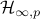

|
Publications
Preprints
A. Sasfi, A. Padoan, I. Markovsky, F. Dörfler, Subspace tracking for online system identification, IEEE TAC.
Journal papers
A. Padoan, Model reduction by least squares moment matching for linear and nonlinear systems, IEEE TAC, 2023. arXiv code
A. Padoan, F. Forni, R. Sepulchre, Balanced truncation for model reduction of biological oscillators, Biological Cybernetics, 2021. PDF
A. Padoan, F. Forni, R. Sepulchre, Model reduction of dominant feedback systems, Automatica, 2021. PDF
A. Padoan, A. Astolfi, Singularities and moments of nonlinear systems, IEEE TAC, 2019. PDF
A. Padoan, A. Astolfi, Moments of random variables: a systems-theoretic interpretation, IEEE TAC, 2019. PDF
A. Padoan, G. Scarciotti, A. Astolfi, A geometric characterisation of the persistence of excitation condition for the solutions of autonomous systems, IEEE TAC, 2017. PDF
A. Padoan, A. Astolfi, A note on delay coordinates for locally observable analytic systems, IEEE TAC, 2015. PDF
Conference papers
A. Rimoldi, C. Cenedese, A. Padoan, F. Dörfler, J. Lygeros, Urban traffic congestion control: a DeePC change, ECC24. arXiv
A. Padoan, F. Dörfler, J. Lygeros, Data-driven representations of conical, convex, and affine behaviors, CDC23. arXiv
A. Padoan, J. Coulson, F. Dörfler, Controller implementability: a data-driven approach, CDC23. arXiv
J. Berberich, A. Iannelli, A. Padoan, J. Coulson, F. Dörfler, F. Allgöwer, A quantitative and constructive proof of Willems’ Fundamental Lemma and its implications, ACC23. arXiv
T. Chaffey, A. Padoan, Circuit model reduction with scaled relative graphs, CDC22. arXiv
A. Padoan, J. Coulson, H. J. van Waarde, J. Lygeros, F. Dörfler, Behavioral uncertainty quantification for data-driven control, CDC22. arXiv
A. Padoan, On model reduction by least squares moment matching, CDC, 2021. arXiv code
A. Padoan, F. Forni, R. Sepulchre, Model reduction by balanced truncation for dominant Lure systems, IFAC, 2020. arXiv
A. Padoan, F. Forni, R. Sepulchre, The  norm as the differential gain of a -dominant system, CDC, 2019. arXiv
A. Padoan, F. Forni, R. Sepulchre, Dominance margins for feedback systems, NOLCOS, 2019. arXiv
A. Padoan, A. Astolfi, On the notion of moment at a pole of a nonlinear system, MTNS, 2018. arXiv
A. Padoan, A. Astolfi, Dimension estimation for nonlinear systems, ECC, 2018. PDF
A. Padoan, A. Astolfi, Eigenvalues and poles of a nonlinear system: A geometric approach, CDC, 2017. PDF
A. Padoan, A. Astolfi, Model reduction by moment matching at isolated singularities for linear systems: A geometric approach, CDC, 2017. PDF
A. Padoan, A. Astolfi, Model reduction by moment matching at isolated singularities for linear systems: A complex analytic approach, IFAC, 2017. PDF
A. Padoan, A. Astolfi, Moments of random variables: a system-theoretic interpretation, ACC, 2017. PDF
A. Padoan, G. Scarciotti, A. Astolfi, A geometric characterisation of persistently exciting sequences generated by discrete-time autonomous systems, CDC, 2016. PDF
A. Padoan, G. Scarciotti, A. Astolfi, A geometric characterisation of persistently exciting signals generated by autonomous systems, NOLCOS, 2016. PDF
A. Padoan, A. Astolfi, Nonlinear system identification for autonomous systems via functional equations methods, ACC, 2016. PDF
A. Padoan, A. Astolfi, Towards deterministic subspace identification for autonomous nonlinear systems, CDC, 2015. PDF
A. Padoan, A. Astolfi, Dimension estimation for autonomous nonlinear systems, CDC, 2015. PDF
A. Padoan, A. Astolfi, Model reduction by moment matching for ZIP systems, CDC, 2014. PDF
Ph.D. Thesis
Disclaimer: This material is presented to ensure timely dissemination of scholarly and technical work. Copyright and all rights therein are retained by authors or by other copyright holders. Each person copying this information is expected to adhere to the terms and constraints invoked by each author's copyright. In most cases, these works may not be reposted without the explicit permission of the copyright holder.
|